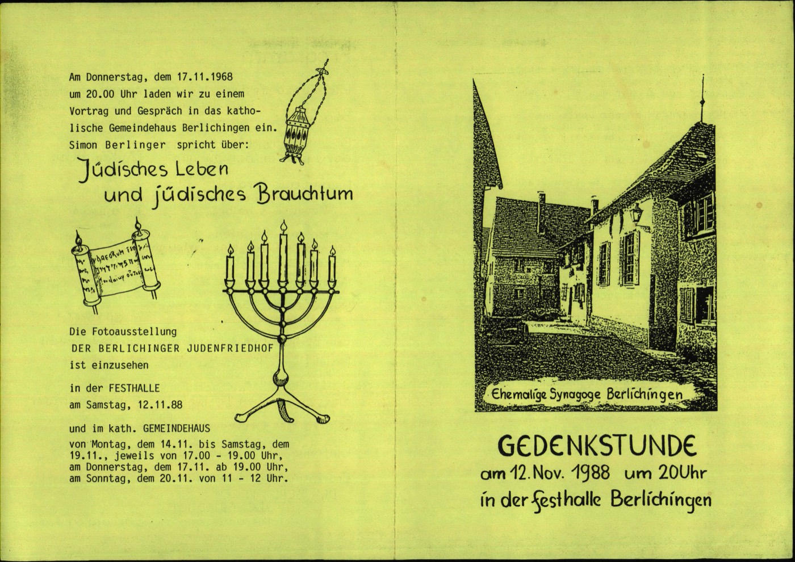
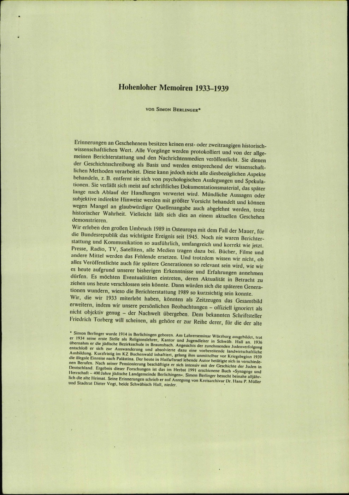

p. 243 — Einladung, Berlichingen, 17.11.1968
Am Donnerstag, dem 17.11.1968 um 20.00 Uhr laden wir zu einem Vortrag und Gespräch in das katholische Gemeindehaus Berlichingen ein.
Simon Berlinger spricht über: Jüdisches Leben und jüdisches Brauchtum.
On Thursday, 17 November 1968 at 8 p.m. we invite you to a lecture and discussion in the Catholic parish hall of Berlichingen. Simon Berlinger speaks on: Jewish life and Jewish custom. — an émigré returning to address his home village.

G-F-0422-3 · p. 243 — Berlichingen lecture invitation, 1968
p. 356 — „Hohenloher Memoiren 1933–1939"
Hohenloher Memoiren 1933–1939 — von Simon Berlinger.
Erinnerungen an Geschehenes besitzen keinen erst- oder zweitrangigen historisch-wissenschaftlichen Wert. … Mündliche Aussagen oder subjektive indirekte Hinweise werden mit größter Vorsicht behandelt und können wegen Mangel an glaubwürdiger Quellenangabe auch abgelehnt werden, trotz historischer Wahrheit.
Hohenlohe Memoirs 1933–1939, by Simon Berlinger. "Memories of what happened possess no first- or second-rank scholarly-historical value … Oral statements or subjective indirect indications are treated with the greatest caution and may be rejected for lack of a credible source — despite their historical truth." A defence of eyewitness memory against the archive.

G-F-0422-3 · p. 356 — memoir opening